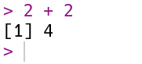
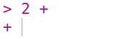
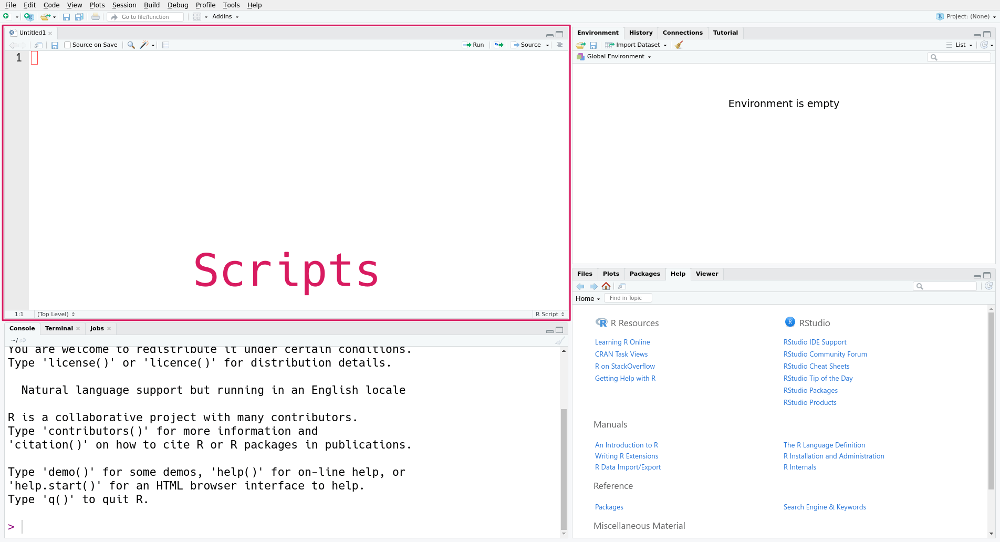

{kind=link}
3.14 * 3^2[1] 28.26After this lesson, you should be able to:
Code you write is reproducible: you can share it with someone else, and if they run it with the same inputs, they’ll get the same results. By writing code, you create an unambiguous record of every step taken in your analysis. This is one of the major advantages of programming languages over point-and-click software like Tableau or Microsoft Excel.
Another advantage of writing code is that it’s often reusable. This means you can:

R is a programming language for statistical computing and graphics. It provides a rich set of built-in tools for cleaning, exploring, modeling, and visualizing data.
The term “R” can mean the R language (the code) or the R interpreter (the software which runs the code). Most of the time, the meaning is clear from the context, but we’ll be explicit in cases where the distinction is important.
Compared to other programming languages, some of R’s particular strengths are its:
The main way you’ll interact with R is by writing R code or expressions. We’ll explain more soon, but first we need to install R and associated software.
To follow along with this and subsequent chapters, you’ll need a recent version of R.
Click here to download the R installer. When the download is complete, run the installer to install (or update) R on your computer. We recommend keeping the installer’s default settings.
In addition to R, you’ll need a recent version of RStudio. RStudio is an integrated development environment (IDE), which means it’s a comprehensive program for writing, editing, searching, and running code. You can do all of these things without RStudio, but RStudio makes the process easier.
Click here to download the free RStudio Desktop installer. When the download is complete, run the installer to install RStudio Deskop on your computer.
On Windows, you’ll also need to download and install RTools in order for some of the packages we’ll use later to work.
The first time you open RStudio, you’ll see a window divided into several panes, like this:
The console pane, on the left, is the main interface to R. If you type R code into the console and press the Enter key on your keyboard, R will run your code and return the result.
On the right are the environment pane and the plots pane. The environment pane shows data in your R workspace. The plots pane shows any plots you make, and also has tabs to browse your file system and to view R’s built-in help files. You’ll learn more about these gradually, but for now, focus on the console pane.
Let’s start by using R to do some arithmetic. In the console, you’ll see that the cursor is on a line that begins with >, called the prompt. You can make R compute the sum \(2 + 2\) by typing the code 2 + 2 after the prompt and then pressing the Enter key. Your code and the result from R should look like this:

R always puts the result on a separate line (or lines) from your code. In this case, the result begins with the tag [1], which is a hint from R that the result is a vector and that this line starts with the element at position 1. You’ll learn more about vectors in Section 13.1, and eventually learn about other data types that are displayed differently. The result of the sum, 4, is displayed after the tag.
If you enter an incomplete expression, R will change the prompt to +, then wait for you to type the rest of the expression and press the Enter key. Here’s what it looks like if you only enter 2 +:

You can finish entering the expression, or you can cancel it by pressing the Esc key (or Ctrl-c if you’re using R without RStudio). R can only tell an expression is incomplete if it’s missing something, like the second operand in 2 +. So if you mean to enter 2 + 2 but accidentally enter 2, which is a complete expression by itself, don’t expect R to read your mind and wait for more input!
Try out some other arithmetic in the R console. Besides + for addition, the other arithmetic operators are:
- for subtraction* for multiplication/ for division%% for remainder division (modulo)^ or ** for exponentiationYou can combine these and use parentheses to make more complicated expressions, just as you would when writing a mathematical expression. When R computes a result, it follows the standard order of operations: parentheses, exponentiation, multiplication, division, addition, and finally subtraction. For example, to estimate the area of a circle with radius 3, you can write:
3.14 * 3^2[1] 28.26You can write R expressions with any number of spaces (including none) around the operators and R will still compute the result.
Use spaces!
As with writing text, putting spaces in your code makes it easier for you and others to read, so it’s good to make it a habit. Put a single space on each side of most operators, after commas, and after keywords.
Since R is designed for mathematics and statistics, you might expect that it provides a better appoximation for \(\pi\) than 3.14. R and most other programming languages allow you to create named values, or variables. R provides a built-in variable called pi for the value of \(\pi\). You can display a variable’s value by entering its name in the console:
pi[1] 3.141593You can also use variables in expressions. For instance, here’s a more precise expression for the area of a circle with radius 3:
pi * 3^2[1] 28.27433You can create a variable with the assignment operator = by writing a name on the left-hand side and a value or expression on the right-hand side. For example, to save the area of the circle in a variable called area, you can write:
area = pi * 3^2You can use the arrow operator <- instead of the assignment operator:
area <- pi * 3^2In most cases, the two operators are interchangeable. For clarity, it’s best to choose one you like and use it consistently in all of your R code. In this reader, we use = because it’s the assignment operator in most programming languages and it’s easier to type.
In R, variable names can contain any combination of letters and dots (.). Names can also include numbers and underscores (_), but can’t start with a them. Spaces and other symbols are not allowed in variable names. So geese, top50.dogs, and nine_lives are valid variable names, but goose teeth, _fishes, and 9lives are not.
The main reason to use variables is to temporarily save results from expressions so that you can use them in other expressions. For instance, now you can use the area variable anywhere you want the area of the circle.
Notice that when you assign a result to a variable, R doesn’t automatically display that result. If you want to see the result as well, you have to enter the variable’s name as a separate expression:
area[1] 28.27433Another reason to use variables is to make an expression clearer and more general. For instance, you might want to compute the area of several circles with different radii. Then the expression pi * 3^2 is too specific. Instead, you can create a variable r, then rewrite the expression as pi * r^2. This makes the expression easier to understand, because the reader doesn’t have to intuit that 3 is the radius in the formula. Here’s the code to compute and display the area of a circle with radius 1 this way:
r = 1
area = pi * r^2
area[1] 3.141593Now if you want to compute the area for a different radius, all you have to do is change r and run the code again (R will not change area until you do this). Writing code that’s general enough to reuse across multiple problems can be a big time-saver in the long run. Later on, you’ll learn ways to make this code even easier to reuse.
Try to choose descriptive variable names, so that you and your collaborators can understand the meaning and purpose of each variable when reading the code.
R treats anything inside single or double quotes as literal text rather than as an expression to evaluate. In programming jargon, a piece of literal text is called a string. You can use whichever kind of quotes you prefer, but the quote at the beginning of the string must match the quote at the end.
'Hi'[1] "Hi""Hello!"[1] "Hello!"Numbers and strings are not the same thing, so for example R considers 1 different from "1". As a result, you can’t use strings with most of R’s arithmetic operators. For instance, this code causes an error:
"1" + 3Error in "1" + 3: non-numeric argument to binary operatorThe error message notes that + is not defined for non-numeric values.
Besides arithmetic, you can also use R to compare values. Programming tasks often involve comparing values. Use comparison operators to do so:
< for “less than”> for “greater than”<= for “less than or equal to”>= for “greater than or equal to”== for “equal to”!= for “not equal to”Notice that the “equal to” operator is two equal signs. This is to distinguish it from the assignment operator =.
Let’s look at a few examples:
1.5 < 3[1] TRUE"a" > "b"[1] FALSEpi == 3.14[1] FALSE"hi" == 'hi'[1] TRUEWhen you make a comparison, R returns a logical value, TRUE or FALSE, to indicate the result. Logical values are not the same as strings, so they are not quoted.
Logical values are values, so you can use them in other computations. For example:
TRUE[1] TRUETRUE == FALSE[1] FALSESection 15.4 describes more ways to use and combine logical values.
Some of R’s equality operators return TRUE even when comparing two different types of data:
"1" == 1[1] TRUE"TRUE" <= TRUE[1] TRUE"FALSE" <= TRUE[1] TRUESection 13.2.2 explains why this happens.
R can do a lot more than just arithmetic. Most of R’s features are provided through functions, pieces of reusable code. You can think of a function as a machine that takes some inputs and uses them to produce some output. In programming jargon, the inputs to a function are called arguments, the output is called the return value, and when you use a function, you’re calling the function.
To call a function, write its name followed by parentheses. Put any arguments to the function inside the parentheses. For example, the function to round a number to a specified decimal place is named round. So you can round the number 8.153 to the nearest integer with this code:
round(8.153)[1] 8Many functions accept more than one argument. For instance, the round function accepts at least two arguments: the number to round and the number of decimal places to keep. When you call a function with multiple arguments, separate the arguments with commas. So to round 8.153 to 1 decimal place:
round(8.153, 1)[1] 8.2When you call a function, R assigns the arguments to the function’s parameter. Parameters are special variables that represent the inputs to a function and only exist while that function runs. For example, the round function has parameters x and digits. The next section, Section 12.4, explains how to look up the parameters of a function.
Some parameters have default arguments. A parameter is automatically assigned its default argument whenever the parameter’s argument is not specified explicitly. As a result, assigning arguments to these parameters is optional. For instance, the digits parameter of round has a default argument (round to the nearest integer), so it’s okay to call round without setting digits, as in round(8.153). In contrast, the x parameter doesn’t have a default argument. Section 12.4 explains how to look up the default arguments for a function.
By default, R assigns arguments to parameters based on their position. The first argument is assigned to the function’s first parameter, the second to the second, and so on. So in the code above, 8.153 is assigned to x and 1 is assigned to digits.
You can also assign arguments to parameters by name with = (not <-), overriding their positions. So some other ways you could write the call above are:
round(8.153, digits = 1)[1] 8.2round(x = 8.153, digits = 1)[1] 8.2round(digits = 1, x = 8.153)[1] 8.2All of these are equivalent. When you write code, choose whatever seems the clearest to you. Leaving parameter names out of calls saves typing, but including some or all of them can make the code easier to understand.
Parameters are not regular variables, and only exist while their associated function runs. You can’t set them before a call, nor can you access them after a call. So this code causes an error:
x = 4.755
round(digits = 2)Error in round(digits = 2): argument "x" is missing, with no defaultIn the error message, R says that you forgot to assign an argument to the parameter x. You can keep the variable x and correct the call by making x an argument (for the parameter x):
round(x, digits = 2)[1] 4.76Or, written more explicitly:
round(x = x, digits = 2)[1] 4.76The point is that variables and parameters are distinct, even if they happen to have the same name. The variable x is not the same thing as the parameter x.
Learning and using a language is hard, so it’s important to know how to get help. The first place to look for help is R’s built-in documentation. In the console, you can access a specific help page by name with ? followed by the name of the page.
There are help pages for all of R’s built-in functions, usually with the same name as the function itself. So the code to open the help page for the round function is:
?roundFor functions, help pages usually include a brief description, a list of parameters, a description of the return value, and some examples. The help page for round shows that there are two parameters x and digits. It also says that digits = 0, meaning the default argument for digits is 0.
There are also help pages for other topics, such as built-in mathematical constants (such as ?pi), data sets (such as ?iris), and operators. To look up the help page for an operator, put the operator’s name in single or double quotes. For example, this code opens the help page for the arithmetic operators:
?"+"It’s always okay to put quotes around the name of the page when you use ?, but they’re only required if it contains non-alphabetic characters. So ?sqrt, ?'sqrt', and ?"sqrt" all open the documentation for sqrt, the square root function.
Sometimes you might not know the name of the help page you want to look up. You can do a general search of R’s help pages with ?? followed by a string of search terms. For example, to get a list of all help pages related to linear models:
??"linear model"This search function doesn’t always work well, and it’s often more efficient to use an online search engine. When you search for help with R online, include “R” as a search term. Alternatively, you can use RSeek, which restricts the search to a selection of R-related websites.
As a programmer, sooner or later you’ll run some code and get an error message or result you didn’t expect. Don’t panic! Even experienced programmers make mistakes regularly, so learning how to diagnose and fix problems is vital.
Try going through these steps:
If none of these steps help, try asking online. Stack Overflow is a popular question and answer website for programmers. Before posting, make sure to read about how to ask a good question.
This section is a review of how files on a computer work. You’ll need to understand this in order to read a data set from a file, and it’s also important for finding your saved notebooks and modules later.
Section 3.2 explained that relative paths have a starting point that depends on the context where the path is used. The working directory is the starting point R uses for relative paths. Think of the working directory as the directory R is currently “at” or watching.
The function getwd returns the absolute path for the current working directory, as a string. It doesn’t require any arguments:
getwd()[1] "/home/nick/mill/datalab/teaching/adventures_in_data_science"On your computer, the output from getwd will likely be different. This is a very useful function for getting your bearings when you write relative paths. If you write a relative path and it doesn’t work as expected, the first thing to do is check the working directory.
The related setwd function changes the working directory. It takes one argument: a path to the new working directory. Here’s an example:
setwd("..")
# Now check the working directory.
getwd()In your R scripts and notebooks, avoid calls to setwd. They make your code more difficult to understand and to run on other computers. Use appropriate relative paths instead.
In the R console, it’s okay to occasionally use setwd. You might need to change the working directory before you run some code. R’s default working directory is your home directory. In some cases, such as when you open a project, RStudio will automatically change the working directory. However, it doesn’t always change the working directory, so setwd is sometimes still necessary.
Another function that’s useful for dealing with the working directory and file system is list.files. The list.files function returns the names of all of the files and directories inside of a directory. It accepts a path to a directory as an argument, or assumes the working directory if you don’t pass a path. For instance:
# List files and directories in /home/.
list.files("/home/")[1] "lost+found" "nick" # List files and directories in the working directory.
list.files() [1] "_build" "_freeze" "_quarto.yml" "chapters"
[5] "CONTRIBUTING.md" "data" "html_cache" "images"
[9] "img" "index.html" "index.qmd" "LICENSE"
[13] "pixi.lock" "pixi.toml" "R" "README.md"
[17] "references.bib" "sandbox" "site_libs" As usual, since you have a different computer, you’re likely to see different output if you run this code. If you call list.files with an invalid path or an empty directory, the output is character(0):
list.files("/this/path/is/fake/")character(0)Later on, you’ll learn about what character(0) means more generally.
When you start a new project, it’s a good idea to create a specific directory for all of the project’s files. If you’re using R, you should also store your R code in that directory. As you work, periodically save your code.
Most of the time, you won’t just write code directly into the R console. Reproducibility and reusability are important benefits of R over point-and-click software, and in order to realize these, you have to save your code to your computer’s hard drive.
The most common way to save R code is as an R script with the extension .R (see Section 12.7 for more about extensions). Editing a script is similar to editing any other text file. You can write, delete, copy, cut, and paste code.
In RStudio, you can create a new R script with this menu option:
File -> New File -> R ScriptThis will open a new pane in RStudio, like this:

The new pane is the scripts pane, which displays all of the R scripts you’re editing. Each script appears in a separate tab. In the screenshot, only one script, the new script, is open.
Every line in an R script must be valid R code. Anything else you want to write in the script (notes, documentation, etc.) must be placed in a comment.
Arrange your code in the order of the steps to solve the problem, even if you write some parts before others. Comment out or delete any lines of code that you try but ultimately decide you don’t need. Make sure to save the file periodically so that you don’t lose your work. Following these guidelines will help you stay organized and make it easier to share your code with others later.
While editing, you can run the current line in the R console by pressing Ctrl-Enter on Windows and Linux, or Cmd-Enter on macOS. This way you can test and correct your code as you write it.
You can source (that is, run) an entire R script by calling the source function with the path to the script as an argument. This is also what the “Source on Save” check box refers to in RStudio. The code runs in order, only stopping if an error occurs.
For instance, if you save the script as my_cool_script.R, then you can enter source("my_cool_script.R") in the console to run the entire script. Pay attention to the path—it may be different on your computer.
In the context of data science, a notebook is an interactive file that can store a mix of code, formatted text, and images. With a notebook, you can write, run code, and view results all in one place. Viewing and editing a notebook requires a web browser or IDE. Some notebooks can also be converted to static documents, such as PDFs. Comments are a good way keep notes as you develop and run your code, but notebooks provide much more flexibility of expression. Notebooks are a kind of literate programming.
Notebooks excel when you want to do highly interactive work and/or want to communicate results. Use notebooks to prototype code, analyze data, refine plots, generate documents and presentations, and practice programming. Scripts excel when you want to reuse code (and perhaps share it as a package) or want to run code that doesn’t require much user interaction (such as time-consuming computations you’ll run on a server or high-performance computing cluster). The remainder of this reader assumes you’re using an R script rather than the R console or a notebook, unless otherwise noted.
Quarto is a popular notebook format and system for R. It also supports Python, Julia, and other programming languages. Quarto files have the extension .qmd. Quarto is based on an older notebook format, R Markdown, which only supports R and can’t be converted to as many kinds of documents. R Markdown is still widely used. R Markdown files have the extension .Rmd.
In order to use Quarto, you must first download and install it. It is not included with R or RStudio.
After installing Quarto, you can create a new Quarto file in RStudio with this menu option:
File -> New -> Quarto Document...RStudio will prompt you to provide some details about the purpose of the file.
Notebooks are subdivided into chunks (or cells). You can create as many chunks as you like, but each chunk can contain only one kind of content. You can run a code chunk by clicking on the chunk and pressing Ctrl-Enter. The notebook will display the result.
Markdown is a simple language you can use to add formatting to (non-code) text in a notebook. For example, surrounding a word with asterisks, as in Let *sleeping* dogs lie, makes the surrounded word italic. You can find a short, interactive tutorial about Markdown here.
To learn more about Quarto, see the official documentation.
Analyzing data sets is one of the most common things to do in R. The first step is to get R to read your data. Data sets come in a variety of file formats, and you need to identify the format in order to tell R how to read the data.
Most of the time, you can guess the format of a file by looking at its extension, the characters (usually three) after the last dot . in the filename. For example, the extension .jpg or .jpeg indicates a JPEG image file. Some operating systems hide extensions by default, but you can find instructions to change this setting online by searching for “show file extensions” and your operating system’s name. The extension is just part of the file’s name, so it should be taken as a hint about the file’s format rather than a guarantee.
R has built-in functions for reading a variety of formats. The R community also provides packages, shareable and reusable pieces of code, to read even more formats. You’ll learn more about packages later, in Chapter 14. For now, let’s focus on data sets that can be read with R’s built-in functions.
Here are several formats that are frequently used to distribute data, along with the name of a built-in function or contributed package that can read the format:
| Name | Extension | Function or Package | Tabular? | Text? |
|---|---|---|---|---|
| Comma-separated Values | .csv |
read.csv |
Yes | Yes |
| Tab-separated Values | .tsv |
read.delim |
Yes | Yes |
| Fixed-width File | .fwf |
read.fwf |
Yes | Yes |
| Microsoft Excel | .xlsx |
readr package | Yes | No |
| Microsoft Excel 1993-2007 | .xls |
readr package | Yes | No |
| Apache Arrow | .feather |
arrow package | Yes | No |
| R Data | .rds |
readRDS |
Sometimes | No |
| R Data | .rda |
load |
Sometimes | No |
| Plaintext | .txt |
readLines |
Sometimes | Yes |
| Extensible Markup Language | .xml |
xml2 package | No | Yes |
| JavaScript Object Notation | .json |
jsonlite package | No | Yes |
A tabular data set is one that’s structured as a table, with rows and columns. This reader focuses on tabular data sets, since they’re common in practice and present the fewest programming challenges. Here’s an example of a tabular data set:
| Fruit | Quantity | Price |
|---|---|---|
| apple | 32 | 1.49 |
| banana | 541 | 0.79 |
| pear | 10 | 1.99 |
A text file is a file that contains human-readable lines of text. You can check this by opening the file with a text editor such as Microsoft Notepad or macOS TextEdit. Many file formats use text in order to make the format easier to work with.
For instance, a comma-separated values (CSV) file records a tabular data using one line per row, with commas separating columns. If you store the table above in a CSV file and open the file in a text editor, here’s what you’ll see:
Fruit,Quantity,Price
apple,32,1.49
banana,541,0.79
pear,10,1.99A binary file is one that’s not human-readable. You can’t just read off the data if you open a binary file in a text editor, but they have a number of other advantages. Compared to text files, binary files are often faster to read and take up less storage space (bytes).
As an example, R’s built-in binary format is called RDS (which may stand for “R data serialized”). RDS files are extremely useful for backing up work, since they can store any kind of R object, even ones that are not tabular. You can learn more about how to create an RDS file on the ?saveRDS help page, and how to read one on the ?readRDS help page.
Let’s use R to read the California least tern data set introduced in Section 11.4.
Click here to download the 2000-2023 California least tern data set.
If you haven’t already, we recommend you create a directory for this workshop. In your workshop directory, create a data/ subdirectory. Download and save the California least tern data set in the data/ subdirectory.
The data set is in a file called is 2000-2023_ca_least_tern.csv, which suggests it’s a CSV file. The function to read a CSV file is read.csv. The function’s first and only required argument is the path to the CSV file.
In the following code, the path to the California least tern data set is data/2000-2023_ca_least_tern.csv, but it might be different for you, depending on R’s working directory and where you saved the file. We’ll save the result from the read.csv function in a variable called terns. We can use this variable to access the data in subsequent code.
terns = read.csv("data/2000-2023_ca_least_tern.csv")The variable name terns is arbitrary; you can choose something different if you want. However, in general, it’s a good habit to choose variable names that describe the contents of the variable somehow.
If you tried running the line of code above and got an error message, pay attention to what the error message says, and remember the strategies to get help from Section 12.4. The most common mistake when reading a file is incorrectly specifying the path, so first check that you got the path right.
If the code ran without errors, it’s a good idea to check that the data set looks like what the documentation describes. When working with a new data set, it usually isn’t a good idea to print the whole thing (at least until you know how big it is). Large data sets can take a long time to print, and the output can be difficult to read.
Instead, use the head function to print only the beginning, or head, of the data set:
head(terns)| year | site_name | site_name_2013_2018 | site_name_1988_2001 | site_abbr | region_3 | region_4 | event | bp_min | bp_max | fl_min | fl_max | total_nests | nonpred_eggs | nonpred_chicks | nonpred_fl | nonpred_ad | pred_control | pred_eggs | pred_chicks | pred_fl | pred_ad | pred_pefa | pred_coy_fox | pred_meso | pred_owlspp | pred_corvid | pred_other_raptor | pred_other_avian | pred_misc | total_pefa | total_coy_fox | total_meso | total_owlspp | total_corvid | total_other_raptor | total_other_avian | total_misc | first_observed | last_observed | first_nest | first_chick | first_fledge |
|---|---|---|---|---|---|---|---|---|---|---|---|---|---|---|---|---|---|---|---|---|---|---|---|---|---|---|---|---|---|---|---|---|---|---|---|---|---|---|---|---|---|---|
| 2000 | PITTSBURG POWER PLANT | Pittsburg Power Plant | NA_2013_2018 POLYGON | PITT_POWER | S.F._BAY | S.F._BAY | LA_NINA | 15 | 15 | 16 | 18 | 15 | 3 | 0 | 0 | 0 | 4 | 2 | 0 | 0 | N | N | N | N | Y | Y | N | N | 0 | 0 | 0 | 0 | 4 | 2 | 0 | 0 | 2000-05-11 | 2000-08-05 | 2000-05-26 | 2000-06-18 | 2000-07-08 | |
| 2000 | ALBANY CENTRAL AVE | NA_NO POLYGON | Albany Central Avenue | AL_CENTAVE | S.F._BAY | S.F._BAY | LA_NINA | 6 | 12 | 1 | 1 | 20 | NA | NA | NA | NA | NA | NA | NA | NA | NA | NA | NA | NA | NA | NA | NA | NA | ||||||||||||||
| 2000 | ALAMEDA POINT | Alameda Point | NA_2013_2018 POLYGON | ALAM_PT | S.F._BAY | S.F._BAY | LA_NINA | 282 | 301 | 200 | 230 | 312 | 124 | 81 | 2 | 1 | 17 | 0 | 0 | 0 | N | N | N | N | N | Y | Y | N | 0 | 0 | 0 | 0 | 0 | 6 | 11 | 0 | 2000-05-01 | 2000-08-19 | 2000-05-16 | 2000-06-07 | 2000-06-30 | |
| 2000 | KETTLEMAN CITY | Kettleman | NA_2013_2018 POLYGON | KET_CTY | KINGS | KINGS | LA_NINA | 2 | 3 | 1 | 2 | 3 | NA | 3 | 1 | 6 | NA | NA | NA | NA | NA | NA | NA | NA | NA | NA | NA | NA | 2000-06-10 | 2000-09-24 | 2000-06-17 | 2000-07-22 | 2000-08-06 | |||||||||
| 2000 | OCEANO DUNES STATE VEHICULAR RECREATION AREA | Oceano Dunes State Vehicular Recreation Area | NA_2013_2018 POLYGON | OCEANO_DUNES | CENTRAL | CENTRAL | LA_NINA | 4 | 5 | 4 | 4 | 5 | 2 | 0 | 0 | 0 | 0 | 4 | 0 | 0 | N | N | N | N | N | N | Y | N | 0 | 0 | 0 | 0 | 0 | 0 | 4 | 0 | 2000-05-04 | 2000-08-30 | 2000-05-28 | 2000-06-20 | 2000-07-13 | |
| 2000 | RANCHO GUADALUPE DUNES PRESERVE | Rancho Guadalupe Dunes Preserve | NA_2013_2018 POLYGON | RGDP | CENTRAL | CENTRAL | LA_NINA | 9 | 9 | 17 | 17 | 9 | 0 | 1 | 0 | 0 | NA | NA | NA | NA | NA | NA | NA | NA | NA | NA | NA | NA | 2000-05-07 | 2000-08-13 | 2000-05-31 | 2000-06-22 | 2000-07-20 |
If you run this code and see a similar table, then congratulations, you’ve read your first data set into R! ✨
The California least terns data set is tabular—as you might have already guessed, since it came from a CSV file. In R, it’s represented by a data frame, a table with rows and columns. R uses data frames to represent most (but not all) kinds of tabular data. The read.csv function, which you used to read this data, always returns a data frame.
Typically, each row in a data frame corresponds to a single subject and is called an observation. Each column corresponds to a measurement of the subject and is called a feature or covariate.
Sometimes people also refer to columns as “variables,” but we’ll try to avoid this, because in programming contexts a variable is a name for a value (which might not be a column).
When you first read an object into R, you might not know whether it’s a data frame. One way to check is visually, by printing it (as you just did with head). A better way to check is with the class function, which returns information about what an object is. For a data frame, the result will always contain data.frame:
class(terns)[1] "data.frame"You’ll learn more about classes in Section 13.2, but for now you can use this function to identify data frames.
Similar to how the head function shows the first six rows of a data frame, the tail function shows the last six:
tail(terns) year site_name site_name_2013_2018
786 2023 NAS NORTH ISLAND Naval Base Coronado
787 2023 NAVAL AMPHIBIOUS BASE CORONADO Naval Base Coronado
788 2023 DSTREET FILL SWEETWATER MARSH NWR D Street Fill
789 2023 CHULA VISTA WILDLIFE RESERVE Chula Vista Wildlife Refuge
790 2023 SOUTH SAN DIEGO BAY UNIT SDNWR SALTWORKS Saltworks
791 2023 TIJUANA ESTUARY NERR Tijuana Estuary
site_name_1988_2001 site_abbr region_3 region_4 event bp_min bp_max
786 NA_2013_2018 POLYGON NASNI SOUTHERN SOUTHERN LA_NINA 0 0
787 NA_2013_2018 POLYGON NAB SOUTHERN SOUTHERN LA_NINA 596 644
788 NA_2013_2018 POLYGON D_ST SOUTHERN SOUTHERN LA_NINA 29 38
789 NA_2013_2018 POLYGON CV SOUTHERN SOUTHERN LA_NINA 47 54
790 NA_2013_2018 POLYGON SALT SOUTHERN SOUTHERN LA_NINA 38 41
791 NA_2013_2018 POLYGON TJ_RIV SOUTHERN SOUTHERN LA_NINA 144 165
fl_min fl_max total_nests nonpred_eggs nonpred_chicks nonpred_fl nonpred_ad
786 0 0 0 0 0 0 0
787 90 128 717 329 185 6 6
788 4 4 44 25 2 0 0
789 5 6 59 32 1 0 0
790 7 7 48 11 2 0 0
791 35 35 171 65 44 1 1
pred_control pred_eggs pred_chicks pred_fl pred_ad pred_pefa pred_coy_fox
786 Y NA NA NA NA N N
787 Y NA NA NA NA N N
788 Y NA NA NA NA Y N
789 Y NA NA NA NA Y N
790 Y NA NA NA NA Y Y
791 Y NA NA NA NA N N
pred_meso pred_owlspp pred_corvid pred_other_raptor pred_other_avian
786 N N N N N
787 N N Y N Y
788 N N N Y Y
789 N N N N N
790 N N N Y N
791 N N N N Y
pred_misc total_pefa total_coy_fox total_meso total_owlspp total_corvid
786 N NA NA NA NA NA
787 Y NA NA NA NA NA
788 Y NA NA NA NA NA
789 Y NA NA NA NA NA
790 Y NA NA NA NA NA
791 Y NA NA NA NA NA
total_other_raptor total_other_avian total_misc first_observed
786 NA NA NA
787 NA NA NA 2023-04-22
788 NA NA NA 2023-04-20
789 NA NA NA 2023-04-20
790 NA NA NA 2023-04-24
791 NA NA NA 2023-04-26
last_observed first_nest first_chick first_fledge
786
787 2023-09-09 2023-05-07 2023-05-31
788 2023-08-24 2023-05-12 2023-06-05
789 2023-09-22 2023-05-14 2023-06-05
790 2023-09-22 2023-05-19 2023-06-09
791 2023-08-28 2023-05-12 2023-06-10 If there are lots of columns or the columns are wide, as is the case here, R wraps the output across lines.
Both head and tail accept an optional second argument that specifies the number of rows to print:
head(terns, 1) year site_name site_name_2013_2018 site_name_1988_2001
1 2000 PITTSBURG POWER PLANT Pittsburg Power Plant NA_2013_2018 POLYGON
site_abbr region_3 region_4 event bp_min bp_max fl_min fl_max total_nests
1 PITT_POWER S.F._BAY S.F._BAY LA_NINA 15 15 16 18 15
nonpred_eggs nonpred_chicks nonpred_fl nonpred_ad pred_control pred_eggs
1 3 0 0 0 4
pred_chicks pred_fl pred_ad pred_pefa pred_coy_fox pred_meso pred_owlspp
1 2 0 0 N N N N
pred_corvid pred_other_raptor pred_other_avian pred_misc total_pefa
1 Y Y N N 0
total_coy_fox total_meso total_owlspp total_corvid total_other_raptor
1 0 0 0 4 2
total_other_avian total_misc first_observed last_observed first_nest
1 0 0 2000-05-11 2000-08-05 2000-05-26
first_chick first_fledge
1 2000-06-18 2000-07-08One way to get a quick idea of what your data looks like without having to skim through all the columns and rows is by inspecting its dimensions. This is the number of rows and columns in a data frame, and you can access this information with the dim function:
dim(terns)[1] 791 43So this data set has 791 rows and 43 columns. As an alternative to the dim function, you can use the nrow and ncol functions to get just the number of rows and number of columns, respectively.
Since the columns have names, you might also want to get just these. You can do that with the names or colnames functions. Both return the same result:
names(terns) [1] "year" "site_name" "site_name_2013_2018"
[4] "site_name_1988_2001" "site_abbr" "region_3"
[7] "region_4" "event" "bp_min"
[10] "bp_max" "fl_min" "fl_max"
[13] "total_nests" "nonpred_eggs" "nonpred_chicks"
[16] "nonpred_fl" "nonpred_ad" "pred_control"
[19] "pred_eggs" "pred_chicks" "pred_fl"
[22] "pred_ad" "pred_pefa" "pred_coy_fox"
[25] "pred_meso" "pred_owlspp" "pred_corvid"
[28] "pred_other_raptor" "pred_other_avian" "pred_misc"
[31] "total_pefa" "total_coy_fox" "total_meso"
[34] "total_owlspp" "total_corvid" "total_other_raptor"
[37] "total_other_avian" "total_misc" "first_observed"
[40] "last_observed" "first_nest" "first_chick"
[43] "first_fledge" colnames(terns) [1] "year" "site_name" "site_name_2013_2018"
[4] "site_name_1988_2001" "site_abbr" "region_3"
[7] "region_4" "event" "bp_min"
[10] "bp_max" "fl_min" "fl_max"
[13] "total_nests" "nonpred_eggs" "nonpred_chicks"
[16] "nonpred_fl" "nonpred_ad" "pred_control"
[19] "pred_eggs" "pred_chicks" "pred_fl"
[22] "pred_ad" "pred_pefa" "pred_coy_fox"
[25] "pred_meso" "pred_owlspp" "pred_corvid"
[28] "pred_other_raptor" "pred_other_avian" "pred_misc"
[31] "total_pefa" "total_coy_fox" "total_meso"
[34] "total_owlspp" "total_corvid" "total_other_raptor"
[37] "total_other_avian" "total_misc" "first_observed"
[40] "last_observed" "first_nest" "first_chick"
[43] "first_fledge" If the rows have names, you can get those with the rownames function. For this particular data set, the rows don’t have names.
An efficient way to get a sense of what’s actually in a data set is to have R compute summary information. This works especially well for data frames, but also applies to other data. R provides two different functions to get summaries: str and summary.
The str function returns a structural summary of an object. This kind of summary tells us about the structure of the data—the number of rows, the number and names of columns, what kind of data is in each column, and some sample values. Here’s the structural summary for the least terns data set:
str(terns)'data.frame': 791 obs. of 43 variables:
$ year : int 2000 2000 2000 2000 2000 2000 2000 2000 2000 2000 ...
$ site_name : chr "PITTSBURG POWER PLANT" "ALBANY CENTRAL AVE" "ALAMEDA POINT" "KETTLEMAN CITY" ...
$ site_name_2013_2018: chr "Pittsburg Power Plant" "NA_NO POLYGON" "Alameda Point" "Kettleman" ...
$ site_name_1988_2001: chr "NA_2013_2018 POLYGON" "Albany Central Avenue" "NA_2013_2018 POLYGON" "NA_2013_2018 POLYGON" ...
$ site_abbr : chr "PITT_POWER" "AL_CENTAVE" "ALAM_PT" "KET_CTY" ...
$ region_3 : chr "S.F._BAY" "S.F._BAY" "S.F._BAY" "KINGS" ...
$ region_4 : chr "S.F._BAY" "S.F._BAY" "S.F._BAY" "KINGS" ...
$ event : chr "LA_NINA" "LA_NINA" "LA_NINA" "LA_NINA" ...
$ bp_min : num 15 6 282 2 4 9 30 21 73 166 ...
$ bp_max : num 15 12 301 3 5 9 32 21 73 167 ...
$ fl_min : int 16 1 200 1 4 17 11 9 60 64 ...
$ fl_max : int 18 1 230 2 4 17 11 9 65 64 ...
$ total_nests : int 15 20 312 3 5 9 32 22 73 252 ...
$ nonpred_eggs : int 3 NA 124 NA 2 0 NA 4 2 NA ...
$ nonpred_chicks : int 0 NA 81 3 0 1 27 3 0 NA ...
$ nonpred_fl : int 0 NA 2 1 0 0 0 NA 0 NA ...
$ nonpred_ad : int 0 NA 1 6 0 0 0 NA 0 NA ...
$ pred_control : chr "" "" "" "" ...
$ pred_eggs : int 4 NA 17 NA 0 NA 0 NA NA NA ...
$ pred_chicks : int 2 NA 0 NA 4 NA 3 NA NA NA ...
$ pred_fl : int 0 NA 0 NA 0 NA 0 NA NA NA ...
$ pred_ad : int 0 NA 0 NA 0 NA 0 NA NA NA ...
$ pred_pefa : chr "N" "" "N" "" ...
$ pred_coy_fox : chr "N" "" "N" "" ...
$ pred_meso : chr "N" "" "N" "" ...
$ pred_owlspp : chr "N" "" "N" "" ...
$ pred_corvid : chr "Y" "" "N" "" ...
$ pred_other_raptor : chr "Y" "" "Y" "" ...
$ pred_other_avian : chr "N" "" "Y" "" ...
$ pred_misc : chr "N" "" "N" "" ...
$ total_pefa : int 0 NA 0 NA 0 NA 0 NA NA NA ...
$ total_coy_fox : int 0 NA 0 NA 0 NA 0 NA NA NA ...
$ total_meso : int 0 NA 0 NA 0 NA 0 NA NA NA ...
$ total_owlspp : int 0 NA 0 NA 0 NA 0 NA NA NA ...
$ total_corvid : int 4 NA 0 NA 0 NA 0 NA NA NA ...
$ total_other_raptor : int 2 NA 6 NA 0 NA 3 NA NA NA ...
$ total_other_avian : int 0 NA 11 NA 4 NA 0 NA NA NA ...
$ total_misc : int 0 NA 0 NA 0 NA 0 NA NA NA ...
$ first_observed : chr "2000-05-11" "" "2000-05-01" "2000-06-10" ...
$ last_observed : chr "2000-08-05" "" "2000-08-19" "2000-09-24" ...
$ first_nest : chr "2000-05-26" "" "2000-05-16" "2000-06-17" ...
$ first_chick : chr "2000-06-18" "" "2000-06-07" "2000-07-22" ...
$ first_fledge : chr "2000-07-08" "" "2000-06-30" "2000-08-06" ...This summary lists information about each column, and includes most of what you found earlier by using several different functions separately. The summary uses chr to indicate columns of text (“characters”) and int to indicate columns of integers.
In contrast to str, the summary function returns a statistical summary of an object. This summary includes summary statistics for each column, choosing appropriate statistics based on the kind of data in the column. For numbers, this is generally the mean, median, and quantiles. For categories, this is the frequencies. Other kinds of statistics are shown for other kinds of data. Here’s the statistical summary for the least terns data set:
summary(terns) year site_name site_name_2013_2018 site_name_1988_2001
Min. :2000 Length:791 Length:791 Length:791
1st Qu.:2008 Class :character Class :character Class :character
Median :2013 Mode :character Mode :character Mode :character
Mean :2013
3rd Qu.:2018
Max. :2023
site_abbr region_3 region_4 event
Length:791 Length:791 Length:791 Length:791
Class :character Class :character Class :character Class :character
Mode :character Mode :character Mode :character Mode :character
bp_min bp_max fl_min fl_max
Min. : 0.0 Min. : 0.0 Min. : 0.00 Min. : 0.00
1st Qu.: 3.0 1st Qu.: 5.0 1st Qu.: 0.00 1st Qu.: 0.00
Median : 30.0 Median : 38.0 Median : 7.00 Median : 9.00
Mean : 129.3 Mean : 151.0 Mean : 40.82 Mean : 50.35
3rd Qu.: 127.5 3rd Qu.: 148.5 3rd Qu.: 38.00 3rd Qu.: 47.50
Max. :1691.0 Max. :1691.0 Max. :1025.00 Max. :1145.00
NA's :8 NA's :8 NA's :12 NA's :12
total_nests nonpred_eggs nonpred_chicks nonpred_fl
Min. : 0.0 Min. : 0.00 Min. : 0.00 Min. : 0.000
1st Qu.: 5.0 1st Qu.: 2.00 1st Qu.: 0.00 1st Qu.: 0.000
Median : 42.0 Median : 12.00 Median : 3.00 Median : 0.000
Mean : 162.8 Mean : 60.29 Mean : 44.37 Mean : 4.181
3rd Qu.: 164.0 3rd Qu.: 69.00 3rd Qu.: 22.00 3rd Qu.: 2.000
Max. :1741.0 Max. :748.00 Max. :1063.00 Max. :207.000
NA's :8 NA's :164 NA's :198 NA's :240
nonpred_ad pred_control pred_eggs pred_chicks
Min. : 0.000 Length:791 Min. : 0.00 Min. : 0.000
1st Qu.: 0.000 Class :character 1st Qu.: 2.00 1st Qu.: 0.000
Median : 0.000 Mode :character Median : 6.50 Median : 2.000
Mean : 0.851 Mean : 41.57 Mean : 8.519
3rd Qu.: 1.000 3rd Qu.: 25.50 3rd Qu.: 7.500
Max. :22.000 Max. :417.00 Max. :149.000
NA's :234 NA's :737 NA's :737
pred_fl pred_ad pred_pefa pred_coy_fox
Min. : 0.000 Min. : 0.00 Length:791 Length:791
1st Qu.: 0.000 1st Qu.: 0.00 Class :character Class :character
Median : 0.000 Median : 0.50 Mode :character Mode :character
Mean : 2.365 Mean : 2.69
3rd Qu.: 2.000 3rd Qu.: 2.00
Max. :23.000 Max. :41.00
NA's :739 NA's :733
pred_meso pred_owlspp pred_corvid pred_other_raptor
Length:791 Length:791 Length:791 Length:791
Class :character Class :character Class :character Class :character
Mode :character Mode :character Mode :character Mode :character
pred_other_avian pred_misc total_pefa total_coy_fox
Length:791 Length:791 Min. : 0.000 Min. : 0.000
Class :character Class :character 1st Qu.: 0.000 1st Qu.: 0.000
Mode :character Mode :character Median : 0.000 Median : 0.000
Mean : 1.741 Mean : 9.464
3rd Qu.: 0.000 3rd Qu.: 0.000
Max. :34.000 Max. :348.000
NA's :737 NA's :735
total_meso total_owlspp total_corvid total_other_raptor
Min. : 0.000 Min. : 0.000 Min. : 0.000 Min. : 0.000
1st Qu.: 0.000 1st Qu.: 0.000 1st Qu.: 0.000 1st Qu.: 0.000
Median : 0.000 Median : 0.000 Median : 0.000 Median : 0.000
Mean : 5.556 Mean : 1.455 Mean : 7.962 Mean : 1.712
3rd Qu.: 0.000 3rd Qu.: 0.500 3rd Qu.: 2.000 3rd Qu.: 1.000
Max. :244.000 Max. :41.000 Max. :177.000 Max. :43.000
NA's :737 NA's :736 NA's :739 NA's :739
total_other_avian total_misc first_observed last_observed
Min. : 0.000 Min. : 0.000 Length:791 Length:791
1st Qu.: 0.000 1st Qu.: 0.000 Class :character Class :character
Median : 0.000 Median : 0.000 Mode :character Mode :character
Mean : 8.898 Mean : 6.566
3rd Qu.: 2.000 3rd Qu.: 0.000
Max. :140.000 Max. :168.000
NA's :742 NA's :738
first_nest first_chick first_fledge
Length:791 Length:791 Length:791
Class :character Class :character Class :character
Mode :character Mode :character Mode :character
You can select an individual column from a data frame by name with $, the dollar sign operator. The syntax is:
VARIABLE$COLUMN_NAMEFor example, for the least terns data set, terns$year selects the year column, which is the year of observation:
terns$year [1] 2000 2000 2000 2000 2000 2000 2000 2000 2000 2000 2000 2000 2000 2000 2000
[16] 2000 2000 2000 2000 2000 2000 2000 2000 2000 2000 2000 2000 2000 2000 2004
[31] 2004 2004 2004 2004 2004 2004 2004 2004 2004 2004 2004 2004 2004 2004 2004
[46] 2004 2004 2004 2004 2004 2004 2004 2004 2004 2004 2004 2004 2004 2004 2004
[61] 2004 2004 2004 2005 2005 2005 2005 2005 2005 2005 2005 2005 2005 2005 2005
[76] 2005 2005 2005 2005 2005 2005 2005 2005 2005 2005 2005 2005 2005 2005 2005
[91] 2005 2005 2005 2005 2006 2006 2006 2006 2006 2006 2006 2006 2006 2006 2006
[106] 2006 2006 2006 2006 2006 2006 2006 2006 2006 2006 2006 2006 2006 2006 2006
[121] 2006 2006 2006 2006 2006 2006 2006 2007 2007 2007 2007 2007 2007 2007 2007
[136] 2007 2007 2007 2007 2007 2007 2007 2007 2007 2007 2007 2007 2007 2007 2007
[151] 2007 2007 2007 2007 2007 2007 2007 2007 2007 2007 2007 2007 2007 2007 2008
[166] 2008 2008 2008 2008 2008 2008 2008 2008 2008 2008 2008 2008 2008 2008 2008
[181] 2008 2008 2008 2008 2008 2008 2008 2008 2008 2008 2008 2008 2008 2008 2008
[196] 2008 2008 2008 2008 2008 2008 2008 2009 2009 2009 2009 2009 2009 2009 2009
[211] 2009 2009 2009 2009 2009 2009 2009 2009 2009 2009 2009 2009 2009 2009 2009
[226] 2009 2009 2009 2009 2009 2009 2009 2009 2009 2009 2009 2009 2009 2009 2009
[241] 2009 2009 2010 2010 2010 2010 2010 2010 2010 2010 2010 2010 2010 2010 2010
[256] 2010 2010 2010 2010 2010 2010 2010 2010 2010 2010 2010 2010 2010 2010 2010
[271] 2010 2010 2010 2010 2010 2010 2010 2010 2010 2010 2010 2010 2011 2011 2011
[286] 2011 2011 2011 2011 2011 2011 2011 2011 2011 2011 2011 2011 2011 2011 2011
[301] 2011 2011 2011 2011 2011 2011 2011 2011 2011 2011 2011 2011 2011 2011 2011
[316] 2011 2011 2011 2011 2011 2011 2011 2011 2012 2012 2012 2012 2012 2012 2012
[331] 2012 2012 2012 2012 2012 2012 2012 2012 2012 2012 2012 2012 2012 2012 2012
[346] 2012 2012 2012 2012 2012 2012 2012 2012 2012 2012 2012 2012 2012 2012 2012
[361] 2012 2012 2012 2012 2013 2013 2013 2013 2013 2013 2013 2013 2013 2013 2013
[376] 2013 2013 2013 2013 2013 2013 2013 2013 2013 2013 2013 2013 2013 2013 2013
[391] 2013 2013 2013 2013 2013 2013 2013 2013 2013 2013 2013 2013 2013 2013 2013
[406] 2013 2014 2014 2014 2014 2014 2014 2014 2014 2014 2014 2014 2014 2014 2014
[421] 2014 2014 2014 2014 2014 2014 2014 2014 2014 2014 2014 2014 2014 2014 2014
[436] 2014 2014 2014 2014 2014 2014 2014 2014 2014 2014 2014 2014 2014 2015 2015
[451] 2015 2015 2015 2015 2015 2015 2015 2015 2015 2015 2015 2015 2015 2015 2015
[466] 2015 2015 2015 2015 2015 2015 2015 2015 2015 2015 2015 2015 2015 2015 2015
[481] 2015 2015 2015 2015 2015 2015 2015 2015 2015 2015 2016 2016 2016 2016 2016
[496] 2016 2016 2016 2016 2016 2016 2016 2016 2016 2016 2016 2016 2016 2016 2016
[511] 2016 2016 2016 2016 2016 2016 2016 2016 2016 2016 2016 2016 2016 2016 2016
[526] 2016 2016 2016 2016 2016 2016 2016 2016 2017 2017 2017 2017 2017 2017 2017
[541] 2017 2017 2017 2017 2017 2017 2017 2017 2017 2017 2017 2017 2017 2017 2017
[556] 2017 2017 2017 2017 2017 2017 2017 2017 2017 2017 2017 2017 2017 2017 2017
[571] 2017 2017 2017 2017 2017 2017 2017 2017 2018 2018 2018 2018 2018 2018 2018
[586] 2018 2018 2018 2018 2018 2018 2018 2018 2018 2018 2018 2018 2018 2018 2018
[601] 2018 2018 2018 2018 2018 2018 2018 2018 2018 2018 2018 2018 2019 2019 2019
[616] 2019 2019 2019 2019 2019 2019 2019 2019 2019 2019 2019 2019 2019 2019 2019
[631] 2019 2019 2019 2019 2019 2019 2019 2019 2019 2019 2019 2019 2019 2019 2019
[646] 2019 2019 2020 2020 2020 2020 2020 2020 2020 2020 2020 2020 2020 2020 2020
[661] 2020 2020 2020 2020 2020 2020 2020 2020 2020 2020 2020 2020 2020 2020 2020
[676] 2020 2020 2020 2020 2020 2020 2020 2021 2021 2021 2021 2021 2021 2021 2021
[691] 2021 2021 2021 2021 2021 2021 2021 2021 2021 2021 2021 2021 2021 2021 2021
[706] 2021 2021 2021 2021 2021 2021 2021 2021 2021 2021 2021 2021 2021 2022 2022
[721] 2022 2022 2022 2022 2022 2022 2022 2022 2022 2022 2022 2022 2022 2022 2022
[736] 2022 2022 2022 2022 2022 2022 2022 2022 2022 2022 2022 2022 2022 2022 2022
[751] 2022 2022 2022 2022 2023 2023 2023 2023 2023 2023 2023 2023 2023 2023 2023
[766] 2023 2023 2023 2023 2023 2023 2023 2023 2023 2023 2023 2023 2023 2023 2023
[781] 2023 2023 2023 2023 2023 2023 2023 2023 2023 2023 2023R provides a variety of functions to compute on columns (and other vectors of data). For instance, what if you want to know the time period the data set covers? You can use the range function to compute the minimum and maximum of a column:
range(terns$year)[1] 2000 2023So the oldest observations are from 2000 and the newest are from 2023, although this function and output doesn’t tell us whether there are observations for the years in between.
You can count the observations for each year with the table function:
table(terns$year)
2000 2004 2005 2006 2007 2008 2009 2010 2011 2012 2013 2014 2015 2016 2017 2018
29 34 31 33 37 38 40 40 41 41 42 42 42 43 45 34
2019 2020 2021 2022 2023
35 35 36 36 37 The table function is great for summarizing columns of categories, where numerical statistics like means and standard deviations aren’t defined.
On the other hand, numerical statistics work well for summarizing columns of numbers. You can use the mean function to compute the mean of a column. For instance, let’s compute the mean of the total_nests column, which is the total number of nests seen at a site:
mean(terns$total_nests)[1] NAThe result is NA because column is missing some values (we’ll explain this in detail in Section 13.3.1). To compute the mean with only the values that are present, set na.rm = TRUE in the call to mean:
mean(terns$total_nests, na.rm = TRUE)[1] 162.8455You can also use the dollar sign operator to assign values to columns. For instance, to assign 2000 to the entire year column:
terns$year = 2000Be careful when you do this, as there is no undo. Fortunately, you haven’t saved this change to the least terns data set to your computer’s hard drive yet, so you can reload the data set to reset it:
terns = read.csv("data/2000-2023_ca_least_tern.csv")In Chapter 15, you’ll learn how to select rows and individual elements from a data frame, as well as other ways to select columns.
12.3.5 Comments
In R and most other programming languages, you can mark parts of your code as comments: expressions to ignore rather than run. Use comments to plan, explain, and document your code. You can also temporarily “comment out” code to prevent it from running, which is often helpful for testing and debugging.
R comments begin with number sign
#and extend to the end of the line:R will ignore comments when you run your code.